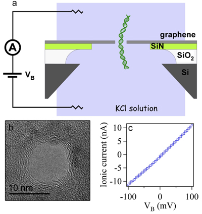

DNA & PROTEIN ANALYSIS GRAPHENE GRAPHENE NANOPORES NANOPARTICLE SYNTHESIS FLUORESCENCE NANOFABRICATION NANOELECTRONICS FORCE MICROSCOPY EQUIPMENT

Christopher A. Merchant, Ken Healy, Meni Wanunu, Vishva Ray, Neil Peterman,
John Bartel, Michael D. Fischbein, Kimberly Venta, Zhengtang Luo,
A. T. Charlie Johnson, Marija Drndic*
"DNA translocation through graphene nanopores"
Nano Letters, 10 (8), pp 2915-2921, 2010.
Press release for this work.
Introduction
Device Fabrication
Translocation Measurements
References
This is a molecular dynamics rendering of a single DNA molecule passing through a graphene nanopore,
created by Robert R. Johnson, who is a postdoctoral fellow at the Institute for Computational Molecular
Science at Temple University working on computational modeling of biophysical and nanoscale systems.
Solid state1-8 and
biological9 nanopores are proving to be invaluable tools for
probing single-molecules. A nanopore is a small hole that connects two chambers that contain
electrolyte solution. An applied voltage across the nanopore drives ions through the pore, which
is recorded from the voltage source using a high-gain amplifier. DNA molecules, added to the
electrolyte solution, can then be driven single file through such nanopores by the electric
field9 . As the molecules translocate they partially block ion
flow through the pore, detected as a drop in the measured current. Electronically monitoring
the process of DNA translocation has been proposed as a low-cost, high-throughput DNA
sequencing technique.9 Recently, the four DNA bases were shown
to impede the ion current differently in a biological pore10,11, and other theoretical and
experimental works suggest that the four bases can be discriminated by measuring their
transverse conductance12-14. In light of these works, synthetic
nanopore materials with atomic thickness and electrical addressability may serve as a step
toward nanopore-based DNA sequencing. Common membrane materials currently used for nanopore
device fabrication are insulators such as silicon nitride15 (SiN),
aluminum oxide16, and silicon oxide17 (SiO2).
Graphene is a thin, flexible material with good electronic conductivity and robust mechanical
properties18-21.
In 2008, we have shown22 that nanopores,
nanopore arrays, and other structures, can be fabricated in suspended graphene sheets by
controlled electron-beam exposure in a transmission electron microscope (TEM). Despite the
extreme thinness of the suspended graphene sheets, nanopores were structurally robust and
their shape was stable over time. Use of graphene as a nanopore membrane material could
permit sensing and control of the electric potential directly at the nanopore. Additionally,
atomically thin graphene nanoelectrodes have been considered for DNA sequencing based on DNA's
transverse conductance13 and multilayer graphene-insulator devices
could control the molecule's motion sufficiently to reliably measure the conductance of each
consecutive nucleotide23,24. Despite these possibilities, the
interactions between graphene nanopores and biomolecules in aqueous solution have yet to be explored.
Recently, we have realized the first experimental realization of DNA translocation through graphene
nanopores, which is the first step towards exploring the potential applications of this new membrane
material. We showed that the ionic blocked current signatures from DNA translocations through sub 10-nm
diameter graphene nanopores compare favorably with similar diameter SiN nanopores. However, we also
observed that the current signal from bare graphene nanopores is noisier than for SiN nanopores, and the
DNA translocation signals reveal non-uniform current amplitudes. This noise is attributed to the presence
of pinholes in some of our graphene membranes as well as incomplete wetting of the membranes.
We also found that atomic layer deposition (ALD) of several nanometers of titanium dioxide over the
devices consistently reduces the nanopore noise level and improves the mechanical robustness of the
device. This process preserves electrical addressability of the nanopore, which may be useful for
realizing both multilayer graphene-insulator nanopores23,24 and graphene
nanogap devices13.
Device Fabrication

Figure 1 Graphene nanopore devices. (a) Device schematic. Few-layer
graphene (1-5 nm thick) is suspended over a 1 μm hole in a 40 nm thick silicon nitride (SiN)
membrane. The SiN membrane is suspended over an approx. 50 x 50 μm2 aperture in a silicon chip
coated with a 5 μm SiO2 layer. The device is inserted into a PDMS measurement cell with microfluidic
channels that form reservoirs in contact with either side of the chip. A bias voltage, VB,
is applied between the reservoirs to drive DNA through the nanopore. (b) TEM image of a nanopore
in a graphene membrane. Scale bar is 10 nm. (c) Ionic current-voltage measurement for this 10-nm
graphene nanopore device in 1M KCl, pH 9.
A schematic of a typical graphene nanopore device is given in Figure 1a. Silicon chips covered with
5-μm SiO2 and 40 nm silicon nitride are etched so that freestanding nitride membranes
of approximately 50 μm square remain. Electron beam lithography (EBL) followed by an SF6
plasma etch is used to pattern a ~1-μm hole through the nitride membrane. Graphene is grown by the
chemical vapor deposition (CVD) of methane over polished copper foils25.
The copper foils are etched in solution so that bare graphene sheets, approximately 1-5 nm thick (3-15
monolayers), float on the surface of the liquid. Suitably-sized graphene sheets, larger than 2 mm ×
2 mm, are then scooped onto the pre-patterned silicon nitride membranes. In this way the graphene is structurally supported by the nitride membrane, with only a limited area freely suspended over the
1-μm hole. Nanopores are then drilled through the suspended graphene membranes by transmission
electron beam ablation lithography26 (TEBAL). We have used CVD graphene,
rather than exfoliated, because the cm-scale sheets are easy to manipulate and the process is scalable
for future applications. It has been observed that CVD graphene is very hydrophobic27, and we have found that a rapid UV/ozone treatment facilitates complete wetting of the
graphene nanopores. All devices underwent at least five minutes of UV/ozone treatment immediately
prior to assembly in a PDMS measurement cell and exposure to electrolyte. Our measurement cell has
microfluidic channels that form reservoirs in contact with either side of the chip. Using a pair of Ag/AgCl
electrodes, a bias voltage, VB, is applied between the two reservoirs to drive ionic current
through the nanopore.
A TEM image of a representative nanopore drilled into a suspended graphene membrane is given in Figure 1b.
The visible rings around the pore are from graphene layers, and their number provides an estimate of the
graphene membrane thickness21,28. Figure 1c shows a typical measurement of
the ionic current through a graphene nanopore as a function of the applied voltage, VB.
Translocation Measurements

Figure 2 DNA translocations through graphene nanopore. (a) TEM image
of an ~ 8-nm graphene
nanopore. (b) Time trace of events for nanopore device shown in (a). (c) Histogram of blocked currents for
measured translocation events for the same device at VB = 100 mV in 1M KCl solution. Data is
fit using two Gaussian functions with mean values at 0.45 and 0.90 nA. Inset displays concatenated events
including some unfolded and folded events which have been observed. IBL values of 0.45, 0.9, and 1.35 nA
are indicated with dashed black lines, indicating unfolded, singly-folded, and doubly-folded entries,
respectively. (d) Scatter plot of event length vs. event depth for same device at VB = 100 mV.
Regions of unfolded and folded events are highlighted inside the circled areas. (d) Histogram of event
lengths for the same device. Data is fit (dashed red line) by a double exponential of the form
a1exp(-t/τ1) + a2exp(-t/τ2) with time constants τ1 = 0.1 and τ2 = 0.5 ms, t is the time,
and a1 and a2 are constants.
A TEM image of an 8-nm graphene nanopore, along with a current trace showing DNA
translocation through the nanopore device, is given in Figures 2a and 2b. The electrolyte solution used
for these measurements was 1 M KCl, 10 mM Tris, 1 mM EDTA, pH 9. We added 15 kbp double-stranded DNA
(Fermentas NoLimits®, Glen Burnie, MD) at a concentration of 1 nM to the analyte reservoir, and applied
a bias voltage of VB = +100 mV to the other reservoir in order to drive DNA through the pore.
The ionic current signal was filtered with a 10 kHz 3-pole Bessel filter and then sampled at 50 kHz.
We see that the 28 nA open pore current sharply decreases by between ~ 500 pA and 1 nA as DNA molecules
pass through the graphene nanopore. Translocation events are not observed before the addition of DNA
molecules. The overall noise level is much higher for this device than for silicon nitride nanopore
devices we have measured, but the DNA capture rate is comparable for both nanopores (~1 event/s for 1nM
and VB = 100 mV). The graphene nanopore noise is dominated by a 1/f noise component, which will be discussed later.
A histogram of the measured blocked current signal, IBL, is shown in Figure 2c for the device
shown in Figure 2a. Here, IBL is defined as IBL = <I> - <Iopen>,
where <I> is the mean pore current during DNA translocation and <Iopen> is the mean
pore current 0.1 ms before DNA entry. The data in Figure 2c has been fit with a double Gaussian with mean
IBL values of 0.45 and 0.9. These mean values correspond to peaks in the histogram of the current
data, and indicate two event populations. Examples of both populations are represented in the inset by
several representative events. From these events we see that both folded and unfolded events comprise the
two populations. The blocked current fraction (i.e., <IBL>/<Iopen>) is
~ 5 times smaller than expected based on the relative areas of the DNA molecule (ADNA) and the nanopore32 (Ap).
We calculate an expected value of ADNA/Ap ~ (2.2 nm)2/(8 nm)2 = 7.6%, compared with a measured blocked current
fraction of 1.6%.
A scatter plot of event depth as a function of event length for ~ 600 events measured with the same device
is given in Figure 2d. Two clear groupings of events are visible, one centered on IBL ~ 0.5 nA (unfolded)
and a second centered on ~ 1 nA (folded). A histogram of the measured event lengths for these events is
given in Figure 2e. There is a large variation in the measured event lengths with no clear average value,
indicating that the peak value is likely just below the measurement threshold. Two clear populations of
events are observed and have been fit with exponential functions8,32 using time
constants of τ1 = 0.1 ms and τ2 = 0.5 ms. These timescales correspond to an average DNA velocity of
between ~ 5 and 30 ns/basepair, comparable to DNA velocities through other nanopore materials34.
Our current work focuses on improving the overall reliability of these devices and on utilizing the
conductivity of the graphene sheet to create devices for probing DNA molecules. We envision graphene-based
nanopore devices that sense and control the electric potential locally at the nanopore and are capable
of measuring transverse current across the pore aperture.
2010, Marija Drndic